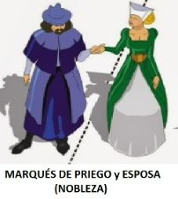
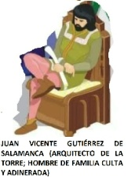
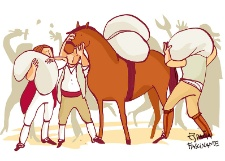
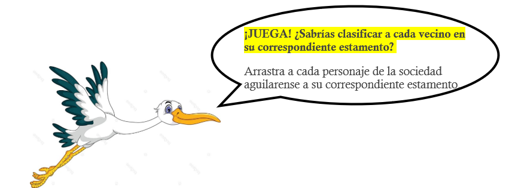

DIN DAN DON ¡EN AGUILAR, 250 AÑOS DE TORRE DEL RELOJ SON!
RETO 2. Aguilar, año 1770: ¡Necesitamos un pueblo mejor!
¿Cómo se organizaba la sociedad aguilarense en 1774?
Antes de jugar... Observa que, desde la Edad Media, las sociedades europea, española y andaluza se vinieron organizando de manera estamental, es decir, había dos grupos: los privilegiados (los gobernantes y los vecinos ricos y poderosos) y los grupos no privilegiados (vecinos trabajadores de a pie y sus humildes familias).

La sociedad aguilarense de finales del s. XVIII no fue ajena a esta clasificación social. Por tanto, quienes participaron en el proyecto de la Torre, tampoco. Aquí están:
|  |  |  | ||
| REY CARLOS III | SEÑOR DE AGUILAR (MARQUÉS DE PRIEGO) | JUAN VICENTE GUTIÉRREZ DE SALAMANCA (Arquitecto de la Torre del Reloj) | DIEGO MUÑOZ DE ZAFRA (Alarife, encargado de obra de la Torre) | ALBAÑILES, PEONES... |
| Aunque residía en Madrid, fue un regente muy preocupado por el avance y modernización del país. Se le conoce como "el mejor alcalde de Madrid" porque ordenó instalar el alumbrado y alcantarillado de la ciudad capital. Autorizó la construcción de la Torre del Reloj de Aguilar. |
Era la autoridad política, el dueño de los territorios donde se asentaba el pueblo de Aguilar y los más cercanos. Recuerda que en aquella época no había provincias ni comunidades autónomas; los pueblos pertenecían a señoríos, marquesados... |
Don Juan Vicente venía de una familia rica y muy ilustrada. Aunque hizo otros trabajos para mejorar el pueblo, su labor más destacada fue la de arquitecto de algunas de las casas señoriales de Aguilar o la misma Plaza Ochavada. |
Aunque desempeñase lo que se llama un "trabajo cualificado, técnico", pertenecía a las clases no privilegiadas, junto a los maestros de taller, la burguesía y el campesinado. Vivían en modestas viviendas, junto a sus talleres o negocios. |
Su labor fue muy importante para elevar la Torre del Reloj y decorarla. Llevaban una vida muy rutinaria: trabajaban mucho para poder comer y vivir en casas muy humildes. |

%E9%B0%E6%EB%E2%F7%D5%F3%FF%F7%B0%A8%B0%D1%FE%F3%E1%FB%F4%FB%F1%F3%B0%BE%B0%F3%E7%E6%FA%FD%E0%B0%A8%B0%B0%BE%B0%FB%FC%E1%E6%E0%E7%F1%E6%FB%FD%FC%E1%B0%A8%B0%AE%E2%AC%AE%E1%E2%F3%FC%B2%E1%E6%EB%FE%F7%AF%CE%B0%F0%F3%F1%F9%F5%E0%FD%E7%FC%F6%BF%F1%FD%FE%FD%E0%A8%B2%B1%F4%F4%F4%F4%A2%A2%A9%CE%B0%AC%AE%F0%AC%D3%FC%E6%F7%E1%B2%F6%F7%B2%F8%E7%F5%F3%E0%BC%BC%BC%B2%DD%F0%E1%F7%E0%E4%F3%AE%BD%F0%AC%AE%BD%E1%E2%F3%FC%AC%B2%E3%E7%F7%BE%B2%F6%F7%E1%F6%F7%B2%FE%F3%B2%D7%F6%F3%F6%B2%DF%F7%F6%FB%F3%BE%B2%FE%F3%E1%B2%E1%FD%F1%FB%F7%F6%F3%F6%F7%E1%B2%F7%E7%E0%FD%E2%F7%F3%BE%B2%F7%E1%E2%F3c%FD%FE%F3%B2%EB%B2%F3%FC%F6%F3%FE%E7%E8%F3%B2%E1%F7%B2%E4%FB%FC%FB%F7%E0%FD%FC%B2%FD%E0%F5%F3%FC%FB%E8%F3%FC%F6%FD%B2%AE%F0%AC%F6%F7%B2%FF%F3%FC%F7%E0%F3%B2%F7%E1%E6%F3%FF%F7%FC%E6%F3%FE%BE%B2%AE%BD%F0%AC%F7%E1%B2%F6%F7%F1%FB%E0%BE%B2%FA%F3%F0%7F%F3%B2%AE%F7%FF%AC%AE%F0%AC%F6%FD%E1%B2%F5%E0%E7%E2%FD%E1%AE%BD%F0%AC%A8%B2%FE%FD%E1%B2%E2%E0%FB%E4%FB%FE%F7%F5%FB%F3%F6%FD%E1%B2%BA%FE%FD%E1%B2%F5%FD%F0%F7%E0%FC%F3%FC%E6%F7%E1%B2%EB%B2%FE%FD%E1%B2%E4%F7%F1%FB%FC%FD%E1%B2%E0%FB%F1%FD%E1%B2%EB%B2%E2%FD%F6%F7%E0%FD%E1%FD%E1%BB%B2%EB%B2%FE%FD%E1%B2%F5%E0%E7%E2%FD%E1%B2%FC%FD%B2%E2%E0%FB%E4%FB%FE%F7%F5%FB%F3%F6%FD%E1%B2%BA%E4%F7%F1%FB%FC%FD%E1%B2%E6%E0%F3%F0%F3%F8%F3%F6%FD%E0%F7%E1%B2%F6%F7%B2%F3%B2%E2%FB%F7%B2%EB%B2%E1%E7%E1%B2%FA%E7%FF%FB%FE%F6%F7%E1%B2%F4%F3%FF%FB%FE%FB%F3%E1%BB%BC2%AE%BD%F7%FF%AC%AE%BD%E2%AC%CE%FC%AE%E2%AC%AE%FB%FF%F5%B2%E1%E0%F1%AF%CE%B0%FA%E6%E6%E2%E1%A8%BD%BD%E5%E5%E5%BC%E0%F7%E1%F7%F3%E0%F1%FA%F5%F3%E6%F7%BC%FC%F7%E6%BD%E2%E0%FD%F4%FB%FE%F7%BD%D1%FD%E1%FF%F7%BF%D5%FD%FF%F7%E8%BF%D1%F3%E0%E0%F3%E1%F1%FD%BD%E2%E7%F0%FE%FB%F1%F3%E6%FB%FD%FC%BD%A1%A1%A1%AA%AB%A5%A6%A1%A7%BD%F4%FB%F5%E7%E0%F7%BD%F4%FB%F5%A0%BD%D3%C1%A8%A5%A5%A3%AA%A6%AA%A2%A0%A5%A7%A1%A1%A1%A3%A1%D2%A3%A7%A4%A3%A2%A1%A6%A1%A3%AA%A0%A5%A7%BD%D5%E0%E7%E2%FD%E1%BF%E1%FD%F1%FB%F3%FE%F7%E1%BF%F7%FC%BF%FE%F3%BF%D7%F6%F3%F6%BF%DF%FD%F6%F7%E0%FC%F3%BF%F7%FC%BF%FE%F3%BF%D7%F6%FB%E6%FD%E0%FB%F3%FE%BF%C4%FB%F1%F7%FC%E1%BF%C4%FB%E4%F7%E1%BF%A4%BF%F1%E7%E0%E1%FD%BF%F6%F7%BF%C2%E0%FB%FF%F3%E0%FB%F3%BC%E2%FC%F5%CE%B0%B2%E5%FB%F6%E6%FA%AF%CE%B0%A5%A2%A2%CE%B0%B2%FA%F7%FB%F5%FA%E6%AF%CE%B0%A5%A5%A1%CE%B0%B2%E1%E6%EB%FE%F7%AF%CE%B0%F6%FB%E1%E2%FE%F3%EB%A8%B2%F0%FE%FD%F1%F9%A9%B2%FF%F3%E0%F5%FB%FC%BF%FE%F7%F4%E6%A8%B2%F3%E7%E6%FD%A9%B2%FF%F3%E0%F5%FB%FC%BF%E0%FB%F5%FA%E6%A8%B2%F3%E7%E6%FD%A9%CE%B0%B2%BD%AC%AE%BD%E2%AC%CE%FC%AE%E2%B2%E1%E6%EB%FE%F7%AF%CE%B0%F4%FD%FC%E6%BF%E1%FB%E8%F7%A8%B2%A3%A4%BC%AA%E2%EA%A9%CE%B0%AC%AE%E1%E2%F3%FC%B2%E1%E6%EB%FE%F7%AF%CE%B0%F0%F3%F1%F9%F5%E0%FD%E7%FC%F6%BF%F1%FD%FE%FD%E0%A8%B2%B1%F4%F4%F4%F4%A2%A2%A9%CE%B0%AC%AE%F0%AC%DE%F3%B2%E1%FD%F1%FB%F7%F6%F3%F6%B2%F3%F5%E7%FB%FE%F3%E0%F7%FC%E1%F7%B2%F6%F7%B2%F4%FB%FC%F3%FE%F7%E1%B2%F6%F7%FE%B2%E1%BC%B2%CA%C4%DB%DB%DB%AE%BD%F0%AC%AE%BD%E1%E2%F3%FC%AC%B2%FC%FD%B2%F4%E7%F7%B2%F3%F8%F7%FC%F3%B2%F3%B2%F7%E1%E6%F3%B2%F1%FE%F3%E1%FB%F4%FB%F1%F3%F1%FBa%FC%B2%E1%FD%F1%FB%F3%FE%BC%B2%C2%FD%E0%B2%E6%F3%FC%E6%FD%BE%B2%E3%E7%FB%F7%FC%F7%E1%B2%E2%F3%E0%E6%FB%F1%FB%E2%F3%E0%FD%FC%B2%F7%FC%B2%F7%FE%B2%E2%E0%FD%EB%F7%F1%E6%FD%B2%F6%F7%B2%FE%F3%B2%C6%FD%E0%E0%F7%BE%B2%E6%F3%FF%E2%FD%F1%FD%BC%B2%D3%E3%E7%7F%B2%F7%E1%E6s%FC%A8%AE%BD%E2%AC%CE%FC%AE%E6%F3%F0%FE%F7%B2%F1%FE%F3%E1%E1%AF%CE%B0%F7%EA%F7%BF%E6%F3%F0%FE%F7%CE%B0%B2%E1%E6%EB%FE%F7%AF%CE%B0%FA%F7%FB%F5%FA%E6%A8%B2%A4%A3%A5%E2%EA%A9%B2%E5%FB%F6%E6%FA%A8%B2%A5%AA%A4%E2%EA%A9%CE%B0%AC%AE%F1%F3%E2%E6%FB%FD%FC%AC%AE%BD%F1%F3%E2%E6%FB%FD%FC%AC%CE%FC%AE%E6%F0%FD%F6%EB%AC%CE%FC%AE%E6%E0%B2%E1%E6%EB%FE%F7%AF%CE%B0%FA%F7%FB%F5%FA%E6%A8%B2%A3%A5%A0%E2%EA%A9%CE%B0%AC%CE%FC%AE%E6%FA%B2%E1%E6%EB%FE%F7%AF%CE%B0%E5%FB%F6%E6%FA%A8%B2%A3%A4%A0%BC%A5%AA%A3%E2%EA%A9%B2%FA%F7%FB%F5%FA%E6%A8%B2%A3%A5%A0%E2%EA%A9%CE%B0%AC%AE%FB%FF%F5%B2%E1%E0%F1%AF%CE%B0%E0%F7%E1%FD%E7%E0%F1%F7%E1%BD%F1%F3%E0%FE%FD%E1%CD%FB%FB%FB%CD%E0%F7%EB%BC%F8%E2%F5%CE%B0%B2%E5%FB%F6%E6%FA%AF%CE%B0%A3%AA%A4%CE%B0%B2%FA%F7%FB%F5%FA%E6%AF%CE%B0%A3%A0%A3%CE%B0%B2%BD%AC%AE%BD%E6%FA%AC%CE%FC%AE%E6%F6%B2%E1%E6%EB%FE%F7%AF%CE%B0%E5%FB%F6%E6%FA%A8%B2%A3%A6%A5%BC%A6%A7%A1%E2%EA%A9%B2%FA%F7%FB%F5%FA%E6%A8%B2%A3%A5%A0%E2%EA%A9%CE%B0%AC%AE%FB%FF%F5%B2%E1%E0%F1%AF%CE%B0%E0%F7%E1%FD%E7%E0%F1%F7%E1%BD%FC%FD%F0%FE%F7%E8%F3%BC%A3%BC%F8%E2%F5%CE%B0%B2%E5%FB%F6%E6%FA%AF%CE%B0%A3%A4%A4%CE%B0%B2%FA%F7%FB%F5%FA%E6%AF%CE%B0%A3%AA%A7%CE%B0%B2%BD%AC%AE%BD%E6%F6%AC%CE%FC%AE%E6%F6%B2%E1%E6%EB%FE%F7%AF%CE%B0%E5%FB%F6%E6%FA%A8%B2%A3%A1%A0%BC%A7%A4%A0%E2%EA%A9%B2%FA%F7%FB%F5%FA%E6%A8%B2%A3%A5%A0%E2%EA%A9%CE%B0%AC%AE%FB%FF%F5%B2%E1%E0%F1%AF%CE%B0%E0%F7%E1%FD%E7%E0%F1%F7%E1%BD%F8%E7%F3%FC%CD%E4%FB%F1%F7%FC%E6%F7%BC%A3%BC%F8%E2%F5%CE%B0%B2%F3%FE%E6%AF%CE%B0%CE%B0%B2%E5%FB%F6%E6%FA%AF%CE%B0%A3%AA%A1%CE%B0%B2%FA%F7%FB%F5%FA%E6%AF%CE%B0%A0%A0%A7%CE%B0%B2%BD%AC%AE%BD%E6%F6%AC%CE%FC%AE%E6%F6%B2%E1%E6%EB%FE%F7%AF%CE%B0%E5%FB%F6%E6%FA%A8%B2%A3%A2%A5%BC%A1%A7%AB%E2%EA%A9%B2%FA%F7%FB%F5%FA%E6%A8%B2%A3%A5%A0%E2%EA%A9%CE%B0%AC%AE%FB%FF%F5%B2%E1%E0%F1%AF%CE%B0%E0%F7%E1%FD%E7%E0%F1%F7%E1%BD%FF%F3%F7%E1%E6%E0%FD%CD%F6%F7%CD%FD%F0%E0%F3%E1%BC%A3%BC%E2%FC%F5%CE%B0%B2%E5%FB%F6%E6%FA%AF%CE%B0%A0%A5%A7%CE%B0%B2%FA%F7%FB%F5%FA%E6%AF%CE%B0%A0%A5%AB%CE%B0%B2%BD%AC%AE%BD%E6%F6%AC%CE%FC%AE%E6%F6%B2%E1%E6%EB%FE%F7%AF%CE%B0%E5%FB%F6%E6%FA%A8%B2%A4%A3%BC%AA%A5%A7%E2%EA%A9%CE%B0%AC%AE%FB%FF%F5%B2%E1%E0%F1%AF%CE%B0%E0%F7%E1%FD%E7%E0%F1%F7%E1%BD%E2%E7%F7%F0%FE%FD%CD%FE%FE%F3%FC%FD%BC%F8%E2%F5%CE%B0%B2%E5%FB%F6%E6%FA%AF%CE%B0%A1%A1%A7%CE%B0%B2%FA%F7%FB%F5%FA%E6%AF%CE%B0%A0%A6%A2%CE%B0%B2%BD%AC%AE%BD%E6%F6%AC%CE%FC%AE%BD%E6%E0%AC%CE%FC%AE%E6%E0%B2%E1%E6%EB%FE%F7%AF%CE%B0%FA%F7%FB%F5%FA%E6%A8%B2%A5%A2%E2%EA%A9%CE%B0%AC%CE%FC%AE%E6%FA%B2%E1%E6%EB%FE%F7%AF%CE%B0%E5%FB%F6%E6%FA%A8%B2%A3%A4%A0%BC%A5%AA%A3%E2%EA%A9%B2%FA%F7%FB%F5%FA%E6%A8%B2%A5%A2%E2%EA%A9%CE%B0%AC%C0%D7%CB%B2%D1%D3%C0%DE%DD%C1%B2%DB%DB%DB%AE%BD%E6%FA%AC%CE%FC%AE%E6%F6%B2%E1%E6%EB%FE%F7%AF%CE%B0%E5%FB%F6%E6%FA%A8%B2%A3%A6%A5%BC%A6%A7%A1%E2%EA%A9%B2%FA%F7%FB%F5%FA%E6%A8%B2%A5%A2%E2%EA%A9%CE%B0%AC%AE%F0%AC%C1%D7C%DD%C0%B2%D6%D7%B2%D3%D5%C7%DB%DE%D3%C0%B2%BA%DF%D3%C0%C3%C7%5B%C1%B2%D6%D7%B2%C2%C0%DB%D7%D5%DD%BB%AE%BD%F0%AC%AE%BD%E6%F6%AC%CE%FC%AE%E6%F6%B2%E1%E6%EB%FE%F7%AF%CE%B0%E5%FB%F6%E6%FA%A8%B2%A3%A1%A0%BC%A7%A4%A0%E2%EA%A9%B2%FA%F7%FB%F5%FA%E6%A8%B2%A5%A2%E2%EA%A9%CE%B0%AC%AE%F0%AC%D8%C7%D3%DC%B2%C4%DB%D1%D7%DC%C6%D7%B2%D5%C7%C6%DB%5B%C0%C0%D7%C8%B2%D6%D7%B2%C1%D3%DE%D3%DF%D3%DC%D1%D3%B2%BA%D3%E0%E3%E7%FB%E6%F7%F1%E6%FD%B2%F6%F7%B2%FE%F3%B2%C6%FD%E0%E0%F7%B2%F6%F7%FE%B2%C0%F7%FE%FD%F8%BB%AE%BD%F0%AC%AE%BD%E6%F6%AC%CE%FC%AE%E6%F6%B2%E1%E6%EB%FE%F7%AF%CE%B0%E5%FB%F6%E6%FA%A8%B2%A3%A2%A5%BC%A1%A7%AB%E2%EA%A9%B2%FA%F7%FB%F5%FA%E6%A8%B2%A5%A2%E2%EA%A9%CE%B0%AC%AE%F0%AC%D6%DB%D7%D5%DD%B2%DF%C7C%DD%C8%B2%D6%D7%B2%C8%D3%D4%C0%D3%B2%BA%D3%FE%F3%E0%FB%F4%F7%BE%B2%F7%FC%F1%F3%E0%F5%F3%F6%FD%B2%F6%F7%B2%FD%F0%E0%F3%B2%F6%F7%B2%FE%F3%B2%C6%FD%E0%E0%F7%BB%AE%BD%F0%AC%AE%BD%E6%F6%AC%CE%FC%AE%E6%F6%B2%E1%E6%EB%FE%F7%AF%CE%B0%E5%FB%F6%E6%FA%A8%B2%A4%A3%BC%AA%A5%A7%E2%EA%A9%CE%B0%AC%AE%F0%AC%D3%DE%D0%D3C%DB%DE%D7%C1%BE%B2%C2%D7%DD%DC%D7%C1%BC%BC%BC%AE%BD%F0%AC%AE%BD%E6%F6%AC%CE%FC%AE%BD%E6%E0%AC%CE%FC%AE%E6%E0%B2%E1%E6%EB%FE%F7%AF%CE%B0%FA%F7%FB%F5%FA%E6%A8%B2%A1%A7%A0%E2%EA%A9%CE%B0%AC%CE%FC%AE%E6%FA%B2%E1%E6%EB%FE%F7%AF%CE%B0%E5%FB%F6%E6%FA%A8%B2%A3%A4%A0%BC%A5%AA%A3%E2%EA%A9%B2%FA%F7%FB%F5%FA%E6%A8%B2%A1%A7%A0%E2%EA%A9%CE%B0%AC%AE%E1%E2%F3%FC%B2%E1%E6%EB%FE%F7%AF%CE%B0%F4%FD%FC%E6%BF%E1%FB%E8%F7%A8%B2%A3%A4%BC%AA%E2%EA%A9%B2%F4%FD%FC%E6%BF%E5%F7%FB%F5%FA%E6%A8%B2%A6%A2%A2%A9%B2%E6%F7%EA%E6%BF%F3%FE%FB%F5%FC%A8%B2%F8%E7%E1%E6%FB%F4%EB%A9%CE%B0%AC%D3%E7%FC%E3%E7%F7%B2%E0%F7%E1%FB%F6%7F%F3%B2%F7%FC%B2%DF%F3%F6%E0%FB%F6%BE%B2%AE%F0%E0%B2%BD%AC%F4%E7%F7%B2%E7%FC%B2%E0%F7%F5%F7%FC%E6%F7%B2%AE%F0%E0%B2%BD%AC%FF%E7%EB%B2%E2%E0%F7%FD%F1%E7%E2%F3%F6%FD%B2%AE%F0%E0%B2%BD%AC%E2%FD%E0%B2%F7%FE%B2%F3%E4%F3%FC%F1%F7%B2%EB%B2%FF%FD%F6%F7%E0%FC%FB%E8%F3%F1%FBa%FC%B2%AE%F0%E0%B2%BD%AC%F6%F7%FE%B2%E2%F3%7F%E1%BC%B2%AE%F0%E0%B2%BD%AC%C1%F7%B2%FE%F7%B2%F1%FD%FC%FD%F1%F7%B2%F1%FD%FF%FD%B2%AE%F0%E0%B2%BD%AC%CE%B0%F7%FE%B2%FF%F7%F8%FD%E0%B2%F3%FE%F1%F3%FE%F6%F7%B2%F6%F7%B2%DF%F3%F6%E0%FB%F6%CE%B0%B2%AE%F0%E0%B2%BD%AC%E2%FD%E0%E3%E7%F7%B2%FD%E0%F6%F7%FCa%B2%FB%FC%E1%E6%F3%FE%F3%E0%B2%F7%FE%B2%AE%F0%E0%B2%BD%AC%F3%FE%E7%FF%F0%E0%F3%F6%FD%B2%EB%B2%F3%FE%F1%F3%FC%E6%F3%E0%FB%FE%FE%F3%F6%FD%B2%AE%F0%E0%B2%BD%AC%F6%F7%B2%FE%F3%B2%F1%FB%E7%F6%F3%F6%B2%F1%F3%E2%FB%E6%F3%FE%BC2%AE%F0%E0%B2%BD%AC%AE%BD%E1%E2%F3%FC%AC%AE%E1%E2%F3%FC%B2%E1%E6%EB%FE%F7%AF%CE%B0%F4%FD%FC%E6%BF%E1%FB%E8%F7%A8%B2%A3%BC%A2%A7%F7%FF%A9%CE%B0%AC%AE%F0%E0%B2%BD%AC%D3%E7%E6%FD%E0%FB%E8a%B2%FE%F3%B2%F1%FD%FC%E1%E6%E0%E7%F1%F1%FBa%FC%B2%AE%F0%E0%B2%BD%AC%F6%F7%B2%FE%F3%B2%C6%FD%E0%E0%F7%B2%F6%F7%FE%B2%C0%F7%FE%FD%F8%B2%F6%F7%B2%D3%F5%E7%FB%FE%F3%E0%BC%AE%BD%E1%E2%F3%FC%AC%AE%BD%E6%FA%AC%CE%FC%AE%E6%F6%B2%E1%E6%EB%FE%F7%AF%CE%B0%E5%FB%F6%E6%FA%A8%B2%A3%A6%A5%BC%A6%A7%A1%E2%EA%A9%B2%FA%F7%FB%F5%FA%E6%A8%B2%A1%A7%A0%E2%EA%A9%CE%B0%AC%D7%E0%F3%B2%FE%F3%B2%AE%F0%AC%F3%E7%E6%FD%E0%FB%F6%F3%F6%AE%BD%F0%AC%B2%E2%FD%FE%7F%E6%FB%F1%F3%BE%B2%F7%FE%B2%F6%E7%F7c%FD%B2%F6%F7%B2%FE%FD%E1%B2%E6%F7%E0%E0%FB%E6%FD%E0%FB%FD%E1%B2%F6%FD%FC%F6%F7%B2%E1%F7%B2%F3%E1%F7%FC%E6%F3%F0%F3%B2%F7%FE%B2%E2%E7%F7%F0%FE%FD%B2%F6%F7%B2%D3%F5%E7%FB%FE%F3%E0%B2%EB%B2%FE%FD%E1%B2%FFs%E1%B2%F1%F7%E0%F1%F3%FC%FD%E1%BC%AE%F0%E0%B2%BD%AC%AE%F0%E0%B2%BD%AC%C0%F7%F1%E7%F7%E0%F6%F3%B2%E3%E7%F7%B2%F7%FC%B2%F3%E3%E7%F7%FE%FE%F3%B2%7B%E2%FD%F1%F3%B2%FC%FD%B2%FA%F3%F0%7F%F3%B2%E2%E0%FD%E4%FB%FC%F1%FB%F3%E1%B2%FC%FB%B2%F1%FD%FF%E7%FC%FB%F6%F3%F6%F7%E1%B2%F3%E7%E6a%FC%FD%FF%F3%E1%A9%B2%FE%FD%E1%B2%E2%E7%F7%F0%FE%FD%E1%B2%E2%F7%E0%E6%F7%FC%F7%F1%7F%F3%FC%B2%F3%B2%E1%F7c%FD%E0%7F%FD%E1%BE%B2%FF%F3%E0%E3%E7%F7%E1%F3%F6%FD%E1%BC%BC%BC%AE%BD%E6%F6%AC%CE%FC%AE%E6%F6%B2%E1%E6%EB%FE%F7%AF%CE%B0%E5%FB%F6%E6%FA%A8%B2%A3%A1%A0%BC%A7%A4%A0%E2%EA%A9%B2%FA%F7%FB%F5%FA%E6%A8%B2%A1%A7%A0%E2%EA%A9%CE%B0%AC%D6%FD%FC%B2%D8%E7%F3%FC%B2%C4%FB%F1%F7%FC%E6%F7%B2%E4%F7%FC%7F%F3%B2%F6%F7%B2%E7%FC%F3%B2%AE%F0%AC%F4%F3%FF%FB%FE%FB%F3%B2%E0%FB%F1%F3%B2%EB%B2%FF%E7%EB%B2%FB%FE%E7%E1%E6%E0%F3%F6%F3%BC%AE%F0%E0%B2%BD%AC%AE%BD%F0%AC%AE%F0%E0%B2%BD%AC%D3%E7%FC%E3%E7%F7%B2%FA%FB%E8%FD%B2%FD%E6%E0%FD%E1%B2%E6%E0%F3%F0%F3%F8%FD%E1%B2%E2%F3%E0%F3%B2%FF%F7%F8%FD%E0%F3%E0%B2%F7%FE%B2%E2%E7%F7%F0%FE%FD%BE%B2%E1%E7%B2%FE%F3%F0%FD%E0%B2%FFs%E1%B2%F6%F7%E1%E6%F3%F1%F3%F6%F3%B2%F4%E7%F7%B2%FE%F3%B2%F6%F7%B2%F3%E0%E3%E7%FB%E6%F7%F1%E6%FD%B2%F6%F7%B2%F3%FE%F5%E7%FC%F3%E1%B2%F6%F7%B2%FE%F3%E1%B2%F1%F3%E1%F3%E1%B2%E1%F7c%FD%E0%FB%F3%FE%F7%E1%B2%F6%F7%B2%D3%F5%E7%FB%FE%F3%E0%B2%FD%B2%FE%F3%B2%FF%FB%E1%FF%F3%AE%F0%AC%B2%C2%FE%F3%E8%F3%B2%DD%F1%FA%F3%E4%F3%F6%F3%BC%AE%F0%E0%B2%BD%AC%AE%F0%E0%B2%BD%AC%AE%F0%E0%B2%BD%AC%AE%BD%F0%AC%AE%BD%E6%F6%AC%CE%FC%AE%E6%F6%B2%E1%E6%EB%FE%F7%AF%CE%B0%E5%FB%F6%E6%FA%A8%B2%A3%A2%A5%BC%A1%A7%AB%E2%EA%A9%B2%FA%F7%FB%F5%FA%E6%A8%B2%A1%A7%A0%E2%EA%A9%CE%B0%AC%AE%E1%E2%F3%FC%B2%E1%E6%EB%FE%F7%AF%CE%B0%F4%FD%FC%E6%BF%E1%FB%E8%F7%A8%B2%A3%A4%BC%AA%E2%EA%A9%CE%B0%AC%D3%E7%FC%E3%E7%F7%B2%F6%F7%E1%F7%FF%E2%F7c%F3%E1%F7%B2%FE%FD%B2%E3%E7%F7%B2%E1%F7%B2%FE%FE%F3%FF%F3%B2%E7%FC%AE%F0%AC%B2%CE%B0%E6%E0%F3%F0%F3%F8%FD%B2%F1%E7%F3%FE%FB%F4%FB%F1%F3%F6%FD%BE%B2%E6%7B%F1%FC%FB%F1%FD%CE%B0%AE%BD%F0%AC%BE%AE%BD%E1%E2%F3%FC%AC2%AE%F0%E0%B2%BD%AC%E2%F7%E0%E6%F7%FC%F7%F1%7F%F3%B2%F3%B2%FE%F3%E1%B2%F1%FE%F3%E1%F7%E1%B2%FC%FD%B2%E2%E0%FB%E4%FB%FE%F7%F5%FB%F3%F6%F3%E1%BE%B2%F8%E7%FC%E6%FD%B2%F3%B2%FE%FD%E1%B2%FF%F3%F7%E1%E6%E0%FD%E1%B2%F6%F7%B2%E6%F3%FE%FE%F7%E0%BE%B2%FE%F3%B2%F0%E7%E0%F5%E7%F7%E1%7F%F3%B2%EB%B2%F7%FE%B2%F1%F3%FF%E2%F7%E1%FB%FC%F3%F6%FD%BC%AE%F0%E0%B2%BD%AC%AE%F0%E0%B2%BD%AC%C4%FB%E4%7F%F3%FC%B2%F7%FC%B2%FF%FD%F6%F7%E1%E6%F3%E1%B2%AE%F0%AC%E4%FB%E4%FB%F7%FC%F6%F3%E1%BE%B2%F8%E7%FC%E6%FD%B2%F3%B2%E1%E7%E1%B2%E6%F3%FE%FE%F7%E0%F7%E1%B2%FD%B2%FC%F7%F5%FD%F1%FB%FD%E1%AE%BD%F0%AC%BC%AE%BD%E6%F6%AC%CE%FC%AE%E6%F6%B2%E1%E6%EB%FE%F7%AF%CE%B0%E5%FB%F6%E6%FA%A8%B2%A4%A3%BC%AA%A5%A7%E2%EA%A9%CE%B0%AC%AE%E1%E2%F3%FC%B2%E1%E6%EB%FE%F7%AF%CE%B0%F4%FD%FC%E6%BF%E1%FB%E8%F7%A8%B2%A3%A4%BC%AA%E2%EA%A9%CE%B0%AC%C1%E7%B2%FE%F3%F0%FD%E0%B2%F4%E7%F7%B2%FF%E7%EB%B2%FB%FF%E2%FD%E0%E6%F3%FC%E6%F7%B2%E2%F3%E0%F3%B2%AE%F0%AC%F7%FE%F7%E4%F3%E0%B2%FE%F3%B2%C6%FD%E0%E0%F7%B2%F6%F7%FE%B2%C0%F7%FE%FD%F8%AE%BD%F0%AC%B2%EB%B2%F6%F7%F1%FD%E0%F3%E0%FE%F3%BC%AE%F0%E0%B2%BD%AC%AE%F0%E0%B2%BD%AC%DE%FE%F7%E4%F3%F0%F3%FC%B2%E7%FC%F3%B2%E4%FB%F6%F3%B2%FF%E7%EB%B2%E0%E7%E6%FB%FC%F3%E0%FB%F3%A8%AE%F0%AC%B2%E6%E0%F3%F0%F3%F8%F3%F0%F3%FC%B2%FF%E7%F1%FA%FD%B2%E2%F3%E0%F3%B2%E2%FD%F6%F7%E0%B2%F1%FD%FF%F7%E0%B2%EB%B2%E4%FB%E4%FB%E0%AE%BD%F0%AC2%F7%FC%B2%F1%F3%E1%F3%E1%B2%FF%E7%EB%B2%FA%E7%FF%FB%FE%F6%F7%E1%BC%AE%BD%E1%E2%F3%FC%AC%AE%BD%E6%F6%AC%CE%FC%AE%BD%E6%E0%AC%CE%FC%AE%BD%E6%F0%FD%F6%EB%AC%CE%FC%AE%BD%E6%F3%F0%FE%F7%AC%CE%FC%AE%E2%AC%AE%E1%E2%F3%FC%B2%E1%E6%EB%FE%F7%AF%CE%B0%F4%FD%FC%E6%BF%E1%FB%E8%F7%A8%B2%A3%BC%A2%A7%F7%FF%A9%CE%B0%AC%AE%FB%FF%F5%B2%E1%E0%F1%AF%CE%B0%E0%F7%E1%FD%E7%E0%F1%F7%E1%BD%FB%FF%F5%BF%A3%BC%A3%BC%E2%FC%F5%CE%B0%B2%F3%FE%E6%AF%CE%B0%CE%B0%B2%BD%AC%AE%BD%E1%E2%F3%FC%AC%AE%BD%E2%AC%B0%BE%B0%E1%FA%FD%E5%DF%FB%FC%FB%FF%FB%E8%F7%B0%A8%F4%F3%FE%E1%F7%BE%B0%FB%E6%FB%FC%F7%E0%F3%E0%EB%B0%A8%E9%B0%E1%FA%FD%E5%D1%FE%E7%F7%B0%A8%F4%F3%FE%E1%F7%BE%B0%F1%FE%E7%F7%D5%F3%FF%F7%B0%A8%B0%B0%BE%B0%E2%F7%E0%F1%F7%FC%E6%F3%F5%F7%D1%FE%E7%F7%B0%A8%A6%A2%BE%B0%E1%FA%FD%E5%D1%FD%F6%F7%D3%F1%F1%F7%E1%E1%B0%A8%F4%F3%FE%E1%F7%BE%B0%F1%FD%F6%F7%D3%F1%F1%F7%E1%E1%B0%A8%B0%B0%BE%B0%FF%F7%E1%E1%F3%F5%F7%D1%FD%F6%F7%D3%F1%F1%F7%E1%E1%B0%A8%B0%B0%EF%BE%B0%E5%FD%E0%F6%E1%D5%F3%FF%F7%B0%A8%C9%E9%B0%E6%EB%E2%F7%B0%A8%A2%BE%B0%EA%B0%A8%A2%BE%B0%EB%B0%A8%A2%BE%B0%F3%E7%E6%FA%FD%E0%B0%A8%B0%B0%BE%B0%F3%FE%E6%B0%A8%B0%B0%BE%B0%E7%E0%FE%B0%A8%B0%E0%F7%E1%FD%E7%E0%F1%F7%E1%BD%F1%F3%E0%FE%FD%E1%BF%FB%FB%FB%BC%F8%E2%F5%B0%BE%B0%F3%E7%F6%FB%FD%B0%A8%B0%B0%BE%B0%F7%C6%F7%EA%E6%B0%A8%B0%B0%BE%B0%F1%FD%FE%FD%E0%B0%A8%B0%B1%A2%A2%A2%A2%A2%A2%B0%BE%B0%F0%F3%F1%F9%F1%FD%FE%FD%E0%B0%A8%B0%B1%A2%A2%A2%A2%A2%A2%B0%BE%B0%F5%E0%FD%E7%E2%B0%A8%A2%BE%B0%FF%E1%F5%DA%FB%E6%B0%A8%B03%D0%DB%D7%DC%B3%B2%D7%DE%B2%C0%D7%CB%B2%D7%C0%D3%B2%C2%C0%DB%C4%DB%DE%D7%D5%DB%D3%D6%DD%B0%BE%B0%FF%E1%F5%D7%E0%E0%FD%E0%B0%A8%B03%DC%DD%B3%B2%D7%DE%B2%C0%D7%CB%B2%D7%C0%D3%B2%C2%C0%DB%C4%DB%DE%D7%D5%DB%D3%D6%DD%B0%EF%BE%E9%B0%E6%EB%E2%F7%B0%A8%A2%BE%B0%EA%B0%A8%A2%BE%B0%EB%B0%A8%A2%BE%B0%F3%E7%E6%FA%FD%E0%B0%A8%B0%B0%BE%B0%F3%FE%E6%B0%A8%B0%B0%BE%B0%E7%E0%FE%B0%A8%B0%E0%F7%E1%FD%E7%E0%F1%F7%E1%BD%DC%DD%D0%DE%D7%C8%D3%BC%F8%E2%F5%B0%BE%B0%F3%E7%F6%FB%FD%B0%A8%B0%B0%BE%B0%F7%C6%F7%EA%E6%B0%A8%B0%B0%BE%B0%F1%FD%FE%FD%E0%B0%A8%B0%B1%A2%A2%A2%A2%A2%A2%B0%BE%B0%F0%F3%F1%F9%F1%FD%FE%FD%E0%B0%A8%B0%B1%F4%F4%F4%F4%F4%F4%B0%BE%B0%F5%E0%FD%E7%E2%B0%A8%A2%BE%B0%FF%E1%F5%DA%FB%E6%B0%A8%B03%D0%DB%D7%DC%B3%B2%D7%DE%B2%C1%D7C%DD%C0%B2%D6%D7%B2%D3%D5%C7%DB%DE%D3%C0%BE%B2%CA%DB%B2%DF%D3%C0%C3%C7%5B%C1%B2%D6%D7%B2%C2%C0%DB%D7%D5%DD%BE%B2%C2%D7%C0%C6%D7%DC%D7%D1%DBA%B2%D3%B2%DE%D3%B2%DC%DD%D0%DE%D7%C8%D3%BE%B2%C3%C7%D7%B2%D7%C0%D3%B2%C2%C0%DB%C4%DB%DE%D7%D5%DB%D3%D6%D3%B0%BE%B0%FF%E1%F5%D7%E0%E0%FD%E0%B0%A8%B03%DC%DD%B3%B2%D7%DE%B2%C1%D7C%DD%C0%B2%D6%D7%B2%D3%D5%C7%DB%DE%D3%C0%BE%B2%CA%DB%B2%DF%D3%C0%C3%C7%5B%C1%B2%D6%D7%B2%C2%C0%DB%D7%D5%DD%BE%B2%C2%D7%C0%C6%D7%DC%D7%D1%DBA%B2%D3%B2%DE%D3%B2%DC%DD%D0%DE%D7%C8%D3%BE%B2%C3%C7%D7%B2%D7%C0%D3%B2%C2%C0%DB%C4%DB%DE%D7%D5%DB%D3%D6%D3%B0%EF%BE%E9%B0%E6%EB%E2%F7%B0%A8%A2%BE%B0%EA%B0%A8%A2%BE%B0%EB%B0%A8%A2%BE%B0%F3%E7%E6%FA%FD%E0%B0%A8%B0%B0%BE%B0%F3%FE%E6%B0%A8%B0%B0%BE%B0%E7%E0%FE%B0%A8%B0%E0%F7%E1%FD%E7%E0%F1%F7%E1%BD%D8%C7%D3%DC%CD%C4%DB%D1%D7%DC%C6%D7%BC%F8%E2%F5%B0%BE%B0%F3%E7%F6%FB%FD%B0%A8%B0%B0%BE%B0%F7%C6%F7%EA%E6%B0%A8%B0%B0%BE%B0%F1%FD%FE%FD%E0%B0%A8%B0%B1%A2%A2%A2%A2%A2%A2%B0%BE%B0%F0%F3%F1%F9%F1%FD%FE%FD%E0%B0%A8%B0%B1%F4%F4%F4%F4%F4%F4%B0%BE%B0%F5%E0%FD%E7%E2%B0%A8%A2%BE%B0%FF%E1%F5%DA%FB%E6%B0%A8%B03%D0%DB%D7%DC%B3%B2%D7%DE%B2%D3%C0%C3%C7%DB%C6%D7%D1%C6%DD%B2%D6%D7%B2%DE%D3%B2%C6%DD%C0%C0%D7%B2%C4%D7%DC_%D3%B2%D6%D7%B2%D4%D3%DF%DB%DE%DB%D3%B2%C0%DB%D1%D3%B2%D7%B2%DB%DE%C7%C1%C6%C0%D3%D6%D3%B0%BE%B0%FF%E1%F5%D7%E0%E0%FD%E0%B0%A8%B03%DC%DD%B3%B2%D7%DE%B2%D3%C0%C3%C7%DB%C6%D7%D1%C6%DD%B2%D6%D7%B2%DE%D3%B2%C6%DD%C0%C0%D7%B2%C4%D7%DC_%D3%B2%D6%D7%B2%D4%D3%DF%DB%DE%DB%D3%B2%C0%DB%D1%D3%B2%D7%B2%DB%DE%C7%C1%C6%C0%D3%D6%D3%B0%EF%BE%E9%B0%E6%EB%E2%F7%B0%A8%A2%BE%B0%EA%B0%A8%A2%BE%B0%EB%B0%A8%A2%BE%B0%F3%E7%E6%FA%FD%E0%B0%A8%B0%B0%BE%B0%F3%FE%E6%B0%A8%B0%B0%BE%B0%E7%E0%FE%B0%A8%B0%E0%F7%E1%FD%E7%E0%F1%F7%E1%BD%DF%D3%D7%C1%C6%C0%DD%CD%D6%D7%CD%DD%D0%C0%D3%C1%BC%E2%FC%F5%B0%BE%B0%F3%E7%F6%FB%FD%B0%A8%B0%B0%BE%B0%F7%C6%F7%EA%E6%B0%A8%B0%B0%BE%B0%F1%FD%FE%FD%E0%B0%A8%B0%B1%A2%A2%A2%A2%A2%A2%B0%BE%B0%F0%F3%F1%F9%F1%FD%FE%FD%E0%B0%A8%B0%B1%F4%F4%F4%F4%F4%F4%B0%BE%B0%F5%E0%FD%E7%E2%B0%A8%A3%BE%B0%FF%E1%F5%DA%FB%E6%B0%A8%B03%D0%DB%D7%DC%B3%B2%D3%C7%DC%C3%C7%D7%B2%C1%C7%B2%C6%C0%D3%D0%D3%D8%DD%B2%D7%C0%D3%B2%DF%C7%CB%B2%DB%DF%C2%DD%C0%C6%D3%DC%C6%D7%BE%B2%C1%D7%B2%D1%DD%DC%C1%DB%D6%D7%C0%D3%D0%D3%B2%C7%DC%B2%D1%DB%C7%D6%D3%D6%D3%DC%DD%B2%DC%DD%B2%C2%C0%DB%C4%DB%DE%D7%D5%DB%D3%D6%DD%B0%BE%B0%FF%E1%F5%D7%E0%E0%FD%E0%B0%A8%B03%DC%DD%B3%B2%D3%C7%DC%C3%C7%D7%B2%C1%C7%B2%C6%C0%D3%D0%D3%D8%DD%B2%D7%C0%D3%B2%DF%C7%CB%B2%DB%DF%C2%DD%C0%C6%D3%DC%C6%D7%BE%B2%C1%D7%B2%D1%DD%DC%C1%DB%D6%D7%C0%D3%D0%D3%B2%C7%DC%B2%D1%DB%C7%D6%D3%D6%D3%DC%DD%B2%DC%DD%B2%C2%C0%DB%C4%DB%DE%D7%D5%DB%D3%D6%DD%B0%EF%BE%E9%B0%E6%EB%E2%F7%B0%A8%A2%BE%B0%EA%B0%A8%A2%BE%B0%EB%B0%A8%A2%BE%B0%F3%E7%E6%FA%FD%E0%B0%A8%B0%B0%BE%B0%F3%FE%E6%B0%A8%B0%B0%BE%B0%E7%E0%FE%B0%A8%B0%E0%F7%E1%FD%E7%E0%F1%F7%E1%BD%C2%C7%D7%D0%DE%DD%CD%DE%DE%D3%DC%DD%BC%A3%BC%F8%E2%F5%B0%BE%B0%F3%E7%F6%FB%FD%B0%A8%B0%B0%BE%B0%F7%C6%F7%EA%E6%B0%A8%B0%B0%BE%B0%F1%FD%FE%FD%E0%B0%A8%B0%B1%A2%A2%A2%A2%A2%A2%B0%BE%B0%F0%F3%F1%F9%F1%FD%FE%FD%E0%B0%A8%B0%B1%F4%F4%F4%F4%F4%F4%B0%BE%B0%F5%E0%FD%E7%E2%B0%A8%A0%BE%B0%FF%E1%F5%DA%FB%E6%B0%A8%B03%D0%DB%D7%DC%B3%B2%D7%DE%B2%C2%C7%D7%D0%DE%DD%B2%DE%DE%D3%DC%DD%BE%B2%D3%C7%DC%C3%C7%D7%B2%D7%C0%D3%B2%DF%C7%CB%B2%C6%C0%D3%D0%D3%D8%D3%D6%DD%C0%BE%B2%C2%D7%C0%C6%D7%DC%D7%D1_%D3%B2%D3%B2%DE%DD%C1%B2%DC%DD%B2%C2%C0%DB%C4%DB%DE%D7%D5%DB%D3%D6%DD%C1%B0%BE%B0%FF%E1%F5%D7%E0%E0%FD%E0%B0%A8%B03%DC%DD%B3%B2%D7%DE%B2%C2%C7%D7%D0%DE%DD%B2%DE%DE%D3%DC%DD%BE%B2%D3%C7%DC%C3%C7%D7%B2%D7%C0%D3%B2%DF%C7%CB%B2%C6%C0%D3%D0%D3%D8%D3%D6%DD%C0%BE%B2%C2%D7%C0%C6%D7%DC%D7%D1_%D3%B2%D3%B2%DE%DD%C1%B2%DC%DD%B2%C2%C0%DB%C4%DB%DE%D7%D5%DB%D3%D6%DD%C1%B0%EF%CF%BE%B0%FB%E1%C1%F1%FD%E0%FF%B0%A8%A2%BE%B0%E6%F7%EA%E6%D0%E7%E6%E6%FD%FC%C1%F1%FD%E0%FF%B0%A8%B0%D5%E7%F3%E0%F6%F3%E0%B2%FE%F3%B2%E2%E7%FC%E6%E7%F3%F1%FBa%FC%B0%BE%B0%E0%F7%E2%F7%F3%E6%D3%F1%E6%FB%E4%FB%E6%EB%B0%A8%F4%F3%FE%E1%F7%BE%B0%E6%F7%EA%E6%D4%F7%F7%F6%D0%F3%F1%F9%B0%A8%B0%B0%BE%B0%E6%F7%EA%E6%D3%F4%E6%F7%E0%B0%A8%B0%B0%BE%B0%F4%F7%F7%F6%D0%F3%F1%F9%B0%A8%F4%F3%FE%E1%F7%BE%B0%E2%F7%E0%F1%F7%FC%E6%F3%F8%F7%D4%D0%B0%A8%A3%A2%A2%BE%B0%F1%E7%E1%E6%FD%FF%DF%F7%E1%E1%F3%F5%F7%E1%B0%A8%E6%E0%E7%F7%BE%B0%E2%F7%E0%F1%F7%FC%E6%F3%F8%F7%C3%E7%F7%E1%E6%FB%FD%FC%E1%B0%A8%A3%A2%A2%BE%B0%E6%FB%FF%F7%B0%A8%A2%BE%B0%E4%F7%E0%E1%FB%FD%FC%B0%A8%A2%BC%AA%BE%B0%F5%E0%FD%E7%E2%E1%B0%A8%C9%B0%C2%C0%DB%C4%DB%DE%D7%D5%DB%D3%D6%DD%C1%A8%B2%C0%D7%CB%BE%B2%D1%DE%D7%C0%DD%BE%B2%DC%DD%D0%DE%D7%C8%D3%B2%EB%B2%C6%D7%C0%C0%D3%C6%D7%DC%DB%D7%DC%C6%D7%C1%B0%BE%B0%DC%DD%B2%C2%C0%DB%C4%DB%DE%D7%D5%DB%D3%D6%DD%C1%A8%B2%D0%C7%C0%D5%C7%D7%C1_%D3%BE%B2%DF%D3%D7%C1%C6%C0%DD%C1%B2%D3%C0%C6%D7%C1%D3%DC%DD%C1%B2%CB%B2%C2%C0%DD%D4%D7%C1%DB%DD%DC%D7%C1%B2%D1%C7%D3%DE%DB%D4%DB%D1%D3%D6%D3%C1%A8%B0%BE%B0%DC%DD%B2%C2%C0%DB%C4%DB%DE%D7%D5%DB%D3%D6%DD%C1%A8%B2%D8%DD%C0%DC%D3%DE%D7%C0%DD%C1%B2%CB%B2%DD%C6%C0%DD%C1%B2%C6%C0%D3%D0%D3%D8%D3%D6%DD%C0%D7%C1%B0%BE%B0%DC%DD%B2%C2%C0%DB%C4%DB%DE%D7%D5%DB%D3%D6%DD%C1%A8%B2%D8%DD%C0%DC%D3%DE%D7%C0%DD%C1%B2%CB%B2%DD%C6%C0%DD%C1%B2%C6%C0%D3%D0%D3%D8%D3%D6%DD%C0%D7%C1%B0%CF%BE%B0%FC%E7%FF%F0%F7%E0%D5%E0%FD%E7%E2%E1%B0%A8%A1%BE%B0%F5%F3%FF%F7%DE%F7%E4%F7%FE%B0%A8%A0%BE%B0%F7%E4%F3%FE%E7%F3%E6%FB%FD%FC%B0%A8%F4%F3%FE%E1%F7%BE%B0%F7%E4%F3%FE%E7%F3%E6%FB%FD%FC%DB%D6%B0%A8%B0%B0%BE%B0%FB%F6%B0%A8%B0%A0%A2%A0%A6%A3%A0%A0%AA%A3%AA%A1%AB%A1%A0%BF%A4%A2%B0%BE%B0%FF%E1%F5%E1%B0%A8%E9%B0%FF%E1%F5%C1%E7%F0%FF%FB%E6%B0%A8%B0%D7%FC%E4%FB%F3%E0%B0%BE%B0%FF%E1%F5%D1%FE%E7%F7%B0%A8%B03%D5%F7%FC%FB%F3%FE%B3%B2%DE%F3%B2%E2%FB%E1%E6%F3%B2%F7%E1%A8%B0%BE%B0%FF%E1%F5%D1%FD%F6%F7%D3%F1%F1%F7%E1%E1%B0%A8%B0%D1a%F6%FB%F5%FD%B2%F6%F7%B2%F3%F1%F1%F7%E1%FD%B0%BE%B0%FF%E1%F5%C2%FE%F3%EB%D3%F5%F3%FB%FC%B0%A8%B0%D8%E7%F5%F3%E0%B2%FD%E6%E0%F3%B2%E4%F7%E8%B0%BE%B0%FF%E1%F5%C2%FE%F3%EB%C1%E6%F3%E0%E6%B0%A8%B0%C2%E7%FE%E1%F7%B2%F3%E3%E7%7F%B2%E2%F3%E0%F3%B2%F8%E7%F5%F3%E0%B0%BE%B0%FF%E1%F5%D7%E0%E0%FD%E0%E1%B0%A8%B0%D7%E0%E0%FD%E0%F7%E1%B0%BE%B0%FF%E1%F5%DA%FB%E6%E1%B0%A8%B0%D3%F1%FB%F7%E0%E6%FD%E1%B0%BE%B0%FF%E1%F5%C1%F1%FD%E0%F7%B0%A8%B0%C2%E7%FC%E6%E7%F3%F1%FBa%FC%B0%BE%B0%FF%E1%F5%DF%FB%FC%FB%FF%FB%E8%F7%B0%A8%B0%DF%FB%FC%FB%FF%FB%E8%F3%E0%B0%BE%B0%FF%E1%F5%DF%F3%EA%FB%FF%FB%E8%F7%B0%A8%B0%DF%F3%EA%FB%FF%FB%E8%F3%E0%B0%BE%B0%FF%E1%F5%D4%E7%FE%FE%C1%F1%E0%F7%F7%FC%B0%A8%B0%C2%F3%FC%E6%F3%FE%FE%F3%B2%D1%FD%FF%E2%FE%F7%E6%F3%B0%BE%B0%FF%E1%F5%D7%EA%FB%E6%D4%E7%FE%FE%C1%F1%E0%F7%F7%FC%B0%A8%B0%C1%F3%FE%FB%E0%B2%F6%F7%FE%B2%FF%FD%F6%FD%B2%E2%F3%FC%E6%F3%FE%FE%F3%B2%F1%FD%FF%E2%FE%F7%E6%F3%B0%BE%B0%FF%E1%F5%DC%E7%FF%C3%E7%F7%E1%E6%FB%FD%FC%E1%B0%A8%B0%DCh%FF%F7%E0%FD%B2%F6%F7%B2%E2%E0%F7%F5%E7%FC%E6%F3%E1%B0%BE%B0%FF%E1%F5%DC%FD%DB%FF%F3%F5%F7%B0%A8%B0%C2%E0%F7%F5%E7%FC%E6%F3%B2%E1%FB%FC%B2%FB%FFs%F5%F7%FC%F7%E1%B0%BE%B0%FF%E1%F5%D1%FD%FD%FE%B0%A8%B03%D0%FB%F7%FC%B3%B0%BE%B0%FF%E1%F5%C1%E7%F1%F1%F7%E1%E1%F7%E1%B0%A8%B03%D1%FD%E0%E0%F7%F1%E6%FD%B3%B2%EE%B23%D7%EA%F1%F7%FE%F7%FC%E6%F7%B3%B2%EE%B23%D5%F7%FC%FB%F3%FE%B3%B2%EE%B23%DF%E7%EB%B2%F0%FB%F7%FC%B3%B2%EE%B23%C2%F7%E0%F4%F7%F1%E6%FD%B3%B0%BE%B0%FF%E1%F5%D4%F3%FB%FE%E7%E0%F7%E1%B0%A8%B03%DC%FD%B2%F7%E0%F3%B2%F7%E1%FD%B3%B2%EE%B23%DB%FC%F1%FD%E0%E0%F7%F1%E6%FD%B3%B2%EE%B23%DC%FD%B2%F7%E1%B2%F1%FD%E0%E0%F7%F1%E6%FD%B3%B2%EE%B23%DE%FD%B2%E1%F7%FC%E6%FB%FF%FD%E1%B3%B2%EE%B23%D7%E0%E0%FD%E0%B3%B0%BE%B0%FF%E1%F5%C6%E0%EB%D3%F5%F3%FB%FC%B0%A8%B0%DC%F7%F1%F7%E1%FB%E6%F3%B2%F3%FE%B2%FF%F7%FC%FD%E1%B2%E7%FC%B2%B7%E1%B7%B2%F6%F7%B2%E0%F7%E1%E2%E7%F7%E1%E6%F3%E1%B2%F1%FD%E0%E0%F7%F1%E6%F3%E1%B2%E2%F3%E0%F3%B2%F1%FD%FC%E1%F7%F5%E7%FB%E0%B2%FE%F3%B2%FB%FC%F4%FD%E0%FF%F3%F1%FBa%FC%BC%B2%C4%E7%F7%FE%E4%F3%B2%F3%B2%FB%FC%E6%F7%FC%E6%F3%E0%FE%FD%BC%B0%BE%B0%FF%E1%F5%D7%FC%F6%D5%F3%FF%F7%C1%F1%FD%E0%F7%B0%A8%B0%D3%FC%E6%F7%E1%B2%F6%F7%B2%F5%E7%F3%E0%F6%F3%E0%B2%FE%F3%B2%E2%E7%FC%E6%E7%F3%F1%FBa%FC%B2%F1%FD%FF%FB%F7%FC%F1%F7%B2%FE%F3%B2%E2%F3%E0%E6%FB%F6%F3%BC%B0%BE%B0%FF%E1%F5%C1%F1%FD%E0%F7%C1%F1%FD%E0%FF%B0%A8%B0%DE%F3%B2%E2%E7%FC%E6%E7%F3%F1%FBa%FC%B2%FC%FD%B2%E1%F7%B2%E2%E7%F7%F6%F7%B2%F5%E7%F3%E0%F6%F3%E0%B2%E2%FD%E0%E3%E7%F7%B2%F7%E1%E6%F3%B2%E2s%F5%FB%FC%F3%B2%FC%FD%B2%F4%FD%E0%FF%F3%B2%E2%F3%E0%E6%F7%B2%B2%F6%F7%B2%E7%FC%B2%E2%F3%E3%E7%F7%E6%F7%B2%C1%D1%DD%C0%DF%BC%B0%BE%B0%FF%E1%F5%DD%FC%FE%EB%C1%F3%E4%F7%C1%F1%FD%E0%F7%B0%A8%B03%C1a%FE%FD%B2%E2%E7%F7%F6%F7%B2%F5%E7%F3%E0%F6%F3%E0%B2%FE%F3%B2%E2%E7%FC%E6%E7%F3%F1%FBa%FC%B2%E7%FC%F3%B2%E4%F7%E8%B3%B0%BE%B0%FF%E1%F5%DD%FC%FE%EB%C1%F3%E4%F7%B0%A8%B0%C1a%FE%FD%B2%E2%E7%F7%F6%F7%B2%F5%E7%F3%E0%F6%F3%E0%B2%E7%FC%F3%B2%E4%F7%E8%B0%BE%B0%FF%E1%F5%DB%FC%F4%FD%E0%FF%F3%E6%FB%FD%FC%B0%A8%B0%DB%FC%F4%FD%E0%FF%F3%F1%FBa%FC%B0%BE%B0%FF%E1%F5%CB%FD%E7%C1%F1%FD%E0%F7%B0%A8%B0%C1%E7%B2%E2%E7%FC%E6%E7%F3%F1%FBa%FC%B0%BE%B0%FF%E1%F5%D3%E7%E6%FA%FD%E0%B0%A8%B0%D3%E7%E6%FD%E0%7F%F3%B0%BE%B0%FF%E1%F5%DD%FC%FE%EB%C1%F3%E4%F7%D3%E7%E6%FD%B0%A8%B0%C1%E7%B2%E2%E7%FC%E6%E7%F3%F1%FBa%FC%B2%E1%F7%B2%F5%E7%F3%E0%F6%F3%E0s%B2%F6%F7%E1%E2%E7%7B%E1%B2%F6%F7%B2%F1%F3%F6%F3%B2%E2%E0%F7%F5%E7%FC%E6%F3%BC%B2%C1a%FE%FD%B2%E2%E7%F7%F6%F7%B2%F8%E7%F5%F3%E0%B2%E7%FC%F3%B2%E4%F7%E8%BC%B0%BE%B0%FF%E1%F5%C1%F3%E4%F7%D3%E7%E6%FD%B0%A8%B0%C1%E7%B2%E2%E7%FC%E6%E7%F3%F1%FBa%FC%B2%E1%F7%B2%F5%E7%F3%E0%F6%F3%E0s%B2%F3%E7%E6%FD%FFs%E6%FB%F1%F3%FF%F7%FC%E6%F7%B2%F6%F7%E1%E2%E7%7B%E1%B2%F6%F7%B2%F1%F3%F6%F3%B2%E2%E0%F7%F5%E7%FC%E6%F3%BC%B0%BE%B0%FF%E1%F5%C1%F7%E4%F7%E0%F3%FE%C1%F1%FD%E0%F7%B0%A8%B0%C2%E7%F7%F6%F7%B2%F5%E7%F3%E0%F6%F3%E0%B2%FE%F3%B2%E2%E7%FC%E6%E7%F3%F1%FBa%FC%B2%E6%F3%FC%E6%F3%E1%B2%E4%F7%F1%F7%E1%B2%F1%FD%FF%FD%B2%E3%E7%FB%F7%E0%F3%B0%BE%B0%FF%E1%F5%CB%FD%E7%DE%F3%E1%E6%C1%F1%FD%E0%F7%B0%A8%B0%DE%F3%B2h%FE%E6%FB%FF%F3%B2%E2%E7%FC%E6%E7%F3%F1%FBa%FC%B2%F5%E7%F3%E0%F6%F3%F6%F3%B2%F7%E1%B0%BE%B0%FF%E1%F5%D3%F1%E6%FB%E6%EB%D1%FD%FF%E2%FE%EB%B0%A8%B0%CB%F3%B2%FA%F3%B2%E0%F7%F3%FE%FB%E8%F3%F6%FD%B2%F7%E1%E6%F3%B2%F3%F1%E6%FB%E4%FB%F6%F3%F6%BC%B0%BE%B0%FF%E1%F5%C2%FE%F3%EB%C1%F7%E4%F7%E0%F3%FE%C6%FB%FF%F7%E1%B0%A8%B0%C2%E7%F7%F6%F7%B2%E0%F7%F3%FE%FB%E8%F3%E0%B2%F7%E1%E6%F3%B2%F3%F1%E6%FB%E4%FB%F6%F3%F6%B2%F1%E7%F3%FC%E6%F3%E1%B2%E4%F7%F1%F7%E1%B2%E3%E7%FB%F7%E0%F3%B0%BE%B0%FF%E1%F5%D1%FE%FD%E1%F7%B0%A8%B0%D1%F7%E0%E0%F3%E0%B0%BE%B0%FF%E1%F5%D3%E7%F6%FB%FD%B0%A8%B0%D3%E7%F6%FB%FD%B0%BE%B0%FF%E1%F5%CB%F7%E1%B0%A8%B0%C1%7F%B0%BE%B0%FF%E1%F5%DC%FD%B0%A8%B0%DC%FD%B0%BE%B0%FF%E1%F5%C6%FB%FF%F7%DD%E4%F7%E0%B0%A8%B0%C6%E7%B2%E6%FB%F7%FF%E2%FD%B2%FA%F3%B2%F4%FB%FC%F3%FE%FB%E8%F3%F6%FD%BC%B2%DB%FC%E6%7B%FC%E6%F3%FE%FD%B2%F6%F7%B2%FC%E7%F7%E4%FD%B0%BE%B0%FF%F5%E1%D5%F3%FF%F7%C1%E6%F3%E0%E6%B0%A8%B03%D7%FE%B2%F8%E7%F7%F5%FD%B2%FA%F3%B2%F1%FD%FF%F7%FC%E8%F3%F6%FD%B3%B2%D3%E0%E0%F3%E1%E6%E0%F3%B2%F1%F3%F6%F3%B2%E6%F3%E0%F8%F7%E6%F3%B2%FA%F3%E1%E6%F3%B2%E1%E7%B2%F1%FD%FC%E6%F7%FC%F7%F6%FD%E0%B0%BE%B0%FF%E1%F5%C1%F7%FE%F7%F1%E6%D1%F3%E0%F6%B0%A8%B0%C1%F7%FE%F7%F1%F1%FB%FD%FC%F3%B2%FD%E6%E0%F3%B2%E6%F3%E0%F8%F7%E6%F3%B0%BE%B0%FF%E1%F5%C1%F7%FE%F7%F1%E6%D1%F3%E0%F6%DD%FC%F7%B0%A8%B0%C1%F7%FE%F7%F1%F1%FB%FD%FC%F3%B2%E7%FC%F3%B2%E6%F3%E0%F8%F7%E6%F3%B0%BE%B0%FF%E1%F5%C0%F7%F0%FD%FD%E6%B0%A8%B0%C0%F7%FB%FC%FB%F1%FB%F3%E0%B0%BE%B0%FF%E1%F5%C6%F7%E1%E6%C2%F3%E1%E1%F7%F6%B0%A8%B03%D5%F7%FC%FB%F3%FE%B3%B23%C2%E0%E7%F7%F0%F3%B2%E1%E7%E2%F7%E0%F3%F6%F3%B3%B0%BE%B0%FF%E1%F5%C6%F7%E1%E6%D4%F3%FB%FE%F7%F6%B0%A8%B0%DC%FD%B2%FA%F3%E1%B2%E1%E7%E2%F7%E0%F3%F6%FD%B2%FE%F3%B2%E2%E0%E7%F7%F0%F3%BC%B2%DB%FC%E6%7B%FC%E6%F3%FE%FD%B2%F6%F7%B2%FC%E7%F7%E4%FD%B0%BE%B0%FF%E1%F5%C0%F7%F0%FD%FD%E6%D5%F3%FF%F7%B0%A8%B0-%D6%F7%E1%F7%F3%E1%B2%E0%F7%FB%FC%FB%F1%FB%F3%E0%B2%F7%E1%E6%F3%B2%E2%F3%E0%E6%FB%F6%F3%AD%B0%BE%B0%FF%E1%F5%D1%FD%FC%E6%FB%FC%E7%F7%B0%A8%B0%D1%FD%FC%E6%FB%FC%E7%F3%E0%B0%BE%B0%FF%E1%F5%C1%FA%FD%E5%D3%FC%E1%E5%F7%E0%E1%B0%A8%B0%D1%FD%FF%E2%E0%FD%F0%F3%E0%B2%E0%F7%E1%E7%FE%E6%F3%F6%FD%E1%B0%BE%B0%FF%E1%F5%C7%FC%F3%FC%E1%E5%F7%E0%F7%F6%C3%E7%F7%E1%E6%FB%FD%FC%E1%B0%A8%B0%C6%F7%B2%FA%F3%FC%B2%E3%E7%F7%F6%F3%F6%FD%B2%B7%E1%B2%E6%F3%E0%F8%F7%E6%F3%E1%B2%E2%FD%E0%B2%F1%FD%FE%FD%F1%F3%E0%B2%F1%FD%E0%E0%F7%F1%E6%F3%FF%F7%FC%E6%F7%BC%B2-%C3%E7%FB%F7%E0%F7%E1%B2%FB%FC%E6%F7%FC%E6%F3%E0%FE%FD%B2%F6%F7%B2%FC%E7%F7%E4%FD%AD%B0%BE%B0%FF%E1%F5%D3%FE%FE%D1%FD%E0%E0%F7%F1%E6%B0%A8%B03%D5%F7%FC%FB%F3%FE%B3%B23%C6%FD%F6%FD%B2%E2%F7%E0%F4%F7%F1%E6%FD%B3%B0%BE%B0%FF%E1%F5%C6%FD%FD%DF%F3%FC%EB%C6%E0%FB%F7%E1%B0%A8%B03%D7%E1%E6%E7%E2%F7%FC%F6%FD%B3%B2%DA%F3%E1%B2%E0%F7%E1%E7%F7%FE%E6%FD%B2%F7%E1%E6%F3%B2%F3%F1%E6%FB%E4%FB%F6%F3%F6%B2%F7%FC%B2%B7%E1%B2%FB%FC%E6%F7%FC%E6%FD%E1%BC%B23%C1%F7%F5%E7%E0%FD%B2%E3%E7%F7%B2%E2%E7%F7%F6%F7%E1%B2%FA%F3%F1%F7%E0%FE%FD%B2%FFs%E1%B2%E0s%E2%FB%F6%FD%B3%B0%BE%B0%FF%E1%F5%C3%A7%B0%A8%B0%DC%FD%B2%FA%F3%E1%B2%F1%FD%FE%FD%F1%F3%F6%FD%B2%B7%E1%B2%E6%F3%E0%F8%F7%E6%F3%E1%B2%F7%FC%B2%E1%E7%B2%FE%E7%F5%F3%E0%BC%B23%DB%FC%E6%7B%FC%E6%F3%FE%FD%B2%F6%F7%B2%FC%E7%F7%E4%FD%B3%B0%BE%B0%FF%E1%F5%C3%A5%B0%A8%B03%D7%E1%E6%E7%E2%F7%FC%F6%FD%B3%B2%DA%F3%E1%B2%F1%FE%F3%E1%FB%F4%FB%F1%F3%F6%FD%B2%F1%FD%E0%E0%F7%F1%E6%F3%FF%F7%FC%E6%F7%B2%FE%F3%B2%FF%F3%EB%FD%E0%B2%E2%F3%E0%E6%F7%B2%F6%F7%B2%FE%F3%E1%B2%E6%F3%E0%F8%F7%E6%F3%E1%BE%B2%B7%E1%BE%B2%E2%F7%E0%FD%B2%F3h%FC%B2%E2%E7%F7%F6%F7%E1%B2%FF%F7%F8%FD%E0%F3%E0%B0%BE%B0%FF%E1%F5%C3%AB%B0%A8%B03%DF%F3%F5%FC%7F%F4%FB%F1%FD%B3%B2%C6%F3%FC%B2%E1a%FE%FD%B2%E6%F7%B2%FA%F3%FC%B2%E3%E7%F7%F6%F3%F6%FD%B2%B7%E1%B2%E6%F3%E0%F8%F7%E6%F3%E1%B2%E2%FD%E0%B2%F1%FD%FE%FD%F1%F3%E0%B2%F1%FD%E0%E0%F7%F1%E6%F3%FF%F7%FC%E6%F7%BC%B2%D0%E7%E1%F1%F3%B2%FE%F3%B2%E2%F7%E0%F4%F7%F1%F1%FBa%FC%B0%BE%B0%FF%E1%F5%C1%F3%E4%F7%D5%F3%FF%F7%D3%E7%E6%FD%B0%A8%B0%C1%E7%B2%E2%E7%FC%E6%E7%F3%F1%FBa%FC%B2%E1%F7%B2%F5%E7%F3%E0%F6%F3%E0s%B2%F3%E7%E6%FD%FFs%E6%FB%F1%F3%FF%F7%FC%E6%F7%B2%F3%FE%B2%F4%FB%FC%F3%FE%FB%E8%F3%E0%B2%F7%FE%B2%F8%E7%F7%F5%FD%BC%B0%BE%B0%FF%E1%F5%DD%FC%FE%EB%C1%F3%E4%F7%D5%F3%FF%F7%D3%E7%E6%FD%B0%A8%B0%C1%E7%B2%E2%E7%FC%E6%E7%F3%F1%FBa%FC%B2%E1%F7%B2%F5%E7%F3%E0%F6%F3%E0s%B2%F3%E7%E6%FD%FFs%E6%FB%F1%F3%FF%F7%FC%E6%F7%B2%F3%FE%B2%F4%FB%FC%F3%FE%FB%E8%F3%E0%B2%F7%FE%B2%F8%E7%F7%F5%FD%BC%B2%C1a%FE%FD%B2%E2%E7%F7%F6%F7%E1%B2%F8%E7%F5%F3%E0%B2%E7%FC%F3%B2%E4%F7%E8%BC%B0%BE%B0%FF%E1%F5%D7%FC%F6%D5%F3%FF%F7%E0%C1%F1%FD%E0%F7%B0%A8%B0%C1a%FE%FD%B2%E2%E7%F7%F6%F7%E1%B2%F5%E7%F3%E0%F6%F3%E0%B2%E6%E7%B2%E2%E7%FC%E6%E7%F3%F1%FBa%FC%B2%E6%E0%F3%E1%B2%F4%FB%FC%F3%FE%FB%E8%F3%E0%B2%FE%F3%B2%E2%F3%E0%E6%FB%F6%F3%BC%B0%BE%B0%FF%E1%F5%C7%FC%F1%FD%FF%E2%FE%F7%E6%F7%F6%D3%F1%E6%FB%E4%FB%E6%EB%B0%A8%B0%D3%F1%E6%FB%E4%FB%F6%F3%F6%B2%FC%FD%B2%F1%FD%FF%E2%FE%F7%E6%F3%F6%F3%B0%BE%B0%FF%E1%F5%C1%E7%F1%F1%F7%E1%E1%F4%E7%FE%D3%F1%E6%FB%E4%FB%E6%EB%B0%A8%B0%D3%F1%E6%FB%E4%FB%F6%F3%F6%B2%E1%E7%E2%F7%E0%F3%F6%F3%BC%B2%C2%E7%FC%E6%E7%F3%F1%FBa%FC%A8%B2%B7%E1%B0%BE%B0%FF%E1%F5%C7%FC%E1%E7%F1%F1%F7%E1%E1%F4%E7%FE%D3%F1%E6%FB%E4%FB%E6%EB%B0%A8%B0%D3%F1%E6%FB%E4%FB%F6%F3%F6%B2%FC%FD%B2%E1%E7%E2%F7%E0%F3%F6%F3%BC%B2%C2%E7%FC%E6%E7%F3%F1%FBa%FC%A8%B2%B7%E1%B0%BE%B0%FF%E1%F5%C6%EB%E2%F7%D5%F3%FF%F7%B0%A8%B0%D1%FE%F3%E1%FB%F4%FB%F1%F3%B0%EF%EF
01234{kind=link}
{kind=link}
{kind=link}
{kind=link}
{kind=link}
Su navegador no es compatible con esta herramienta.
Obra publicada con Licencia Creative Commons Reconocimiento No comercial 4.0